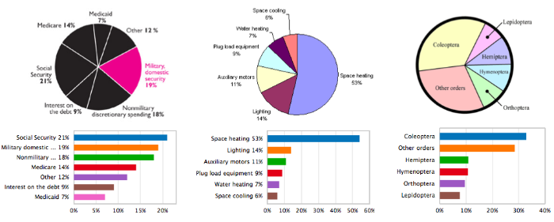

OxShef: dataviz splits our documentation over multiple websites, this page combines a high-level overview of all the things you need to know from these sites in order to design effective visualisations as part of a reproducible dataviz workflow.
OxShef: Publishers provides resources to assist researchers in finding publishers who support or else collaborate in the embedding of data visualisations alongside publications, and what constitutes a reproducible dataviz workflow.
There are two extremely important technologies you should know about to work reproducibly:
DOI: Digital Object Identifiers (DOI) allow research outputs to be uniquely and efficiently cited, all genuine academic journals and data repositories issue DOI so that publications and datasets may be cited separately. DOI always have the format 10.xxxx/xx.x and these can be converted into links that resolve to the research output as follows: doi.org/10.xxxx/x.x.
ORCID: Open Researcher and Contributor ID (ORCID) is a unique identifer for researchers, academics, journalists and anyone who wants to reproducibly claim ownership of their publications. ORCID is tightly integrated into the academic publishing industry, provided your ORCID is included in your article submissions an automatically generated publication profile will be crearted for you (an example ORCID profile). ORCID are formatted as XXXX-XXXX-XXXX-XXXX and can be converted into links that resolve to the person you’re looking for as follows: orcid.org/XXXX-XXXX-XXXX-XXXX. Please note that many institutions support authenticating your position via your ORCID, consider searching for <institution name> ORCID integration.
OxShef: Publishers doesn’t provide any further training or tutorials in this area as including DOI and ORCID in all your research outputs should be sufficient to support a fully reproducible dataviz workflow. However, you might find it useful to refer to our pages documenting how to collaborate with publishers on dataviz
OxShef: Tools cannot be a complete overview of all visualisation tools available, nor can we maintain a complete overview of training and templates available for the dataviz tools that meet our reproducible dataviz workflow criteria. However, you might find these resources generally useful:
Awesome Lists (Data Viz): This is a crowd sourced collection of resources about data visualisation tools, tutorials and other resources. It’s maintained via GitHub, so anyone can contribute.
Lynda.com: Subscription learning service with courses on a wide variety of dataviz tools, many Universities provide access to Lynda.com for free. Contact your local research support teams for support.
Datacamp.com: Subscription learning service with courses on a variety of dataviz tools.
Materials specific to dataviz tools that meet our reproducible dataviz workflow criteria.
Dash is a technology developed by plot.ly that allows Python users to create rich, interactive data visualisations and interfaces - commonly abbreviated to “data dashboards”. This is a fairly new technology (first released June 2017) that does not have much coverage outside of the first-party resources on the plot.ly website.
OxShef: dataviz are currently drafting a dedicated site with training, tutorials and templates for Dash dashboards. In the meantime, we recommend you check out the blog annoucement and Chris’ conference presentation at SciPy 2017.
Jupyter notebooks are the successor to iPython notebooks, a literate programming technology that allows text, code, charts and interactive content to be combined together into a single document. Jupyter allows code from multiple languages to be combined in the same document, the easiest to use languaes are Julia, Python and R. Using a combination of these technologies it is possible to build rich, interactive data visualisations. With some additional effort it is possible to host Jupyter notebooks in such a fashion that enables a reproducible dataviz workflow.
OxShef: dataviz are currently drafting a dedicated site with training, tutorials and templates for using Jupyter in a reproducible dataviz workfow. In the meantime, you might find this Datacamp.com free tutorial useful and there is also a Lynda.com course that introduces the basics of Jupyter notebooks
Shiny is an R library developed by RStudio that allows R users to create interactive web applications without having to learn HTML, CSS or JavaScript. OxShef: Shiny provides a host of training, tutorials and templates for creating Shiny apps within the context of a fully reproducible dataviz workflow.
There are many excellent resources for learning more (and keeping up to date with) Shiny:
There is also a Lynda.com course dedicated to creating Shiny apps and interactive presentations with RMarkdown.
OxShef: Charts provides general advice on choosing the most appropriate visualisation for your data and to avoid making common mistakes or pitfalls in data viz. However, we do not provide interactive tools for matching your data to charts (or vice versa).
There are many tools (Excel, Google Sheets, Plotly, Tableau) which automatically suggest charts based on the properties of your dataset. This is possible thanks to excellent research into visual perception theory and machine vision from back in the 1980s through to today.
In fact, some tools like ReVision are even capable of taking existing charts and re-designing them to be more accessible and easy to read by humans. The example here shows a number of badly designed pie charts that have been converted into much easier to understand barcharts.

OxShef: Charts maintains a collection of tools and resources to assist you in developing and designing effective visualisations, split into the following three categories:
Some charts are more suitable for specific purposes than others. In some cases these resources can automate the chart selection process, or at least help exclude some chart options.
There are many best practices for dataviz which radically improve the legibility of a chart, for instance: horizontal barcharts with bars arranged from longest to shortest are significantly easier to interpet than unordered vertical barcharts.
Sadly, there’s little general advice for effectively adding interactivity to charts. However, two extremely useful rules of thumb are “Make the least interactive thing that works” (@BrianBoyer) and Ben Shneiderman’s mantra Overview first, zoom and filter, then details-on-demand.